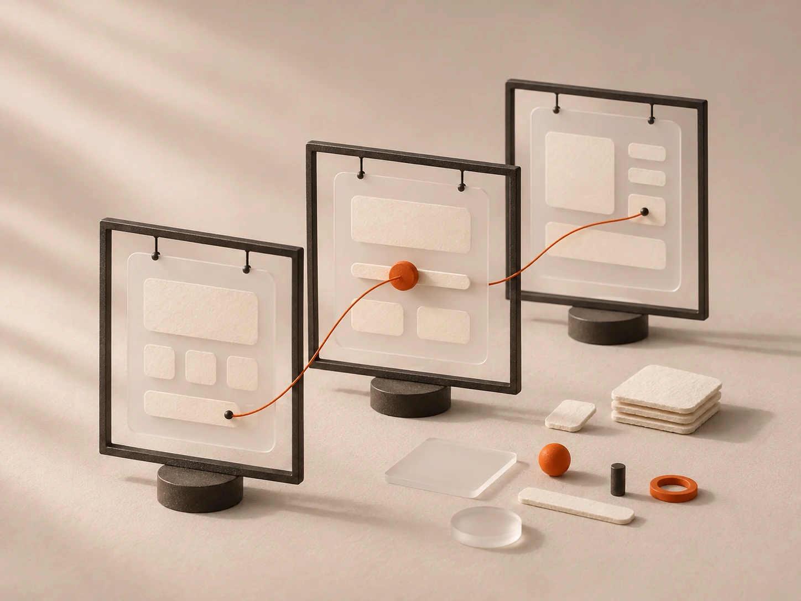
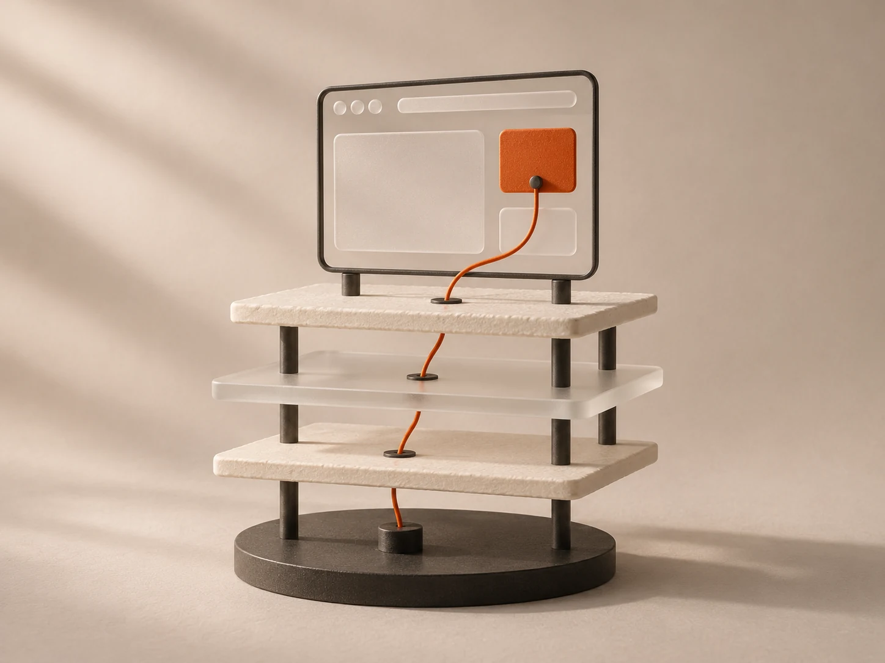
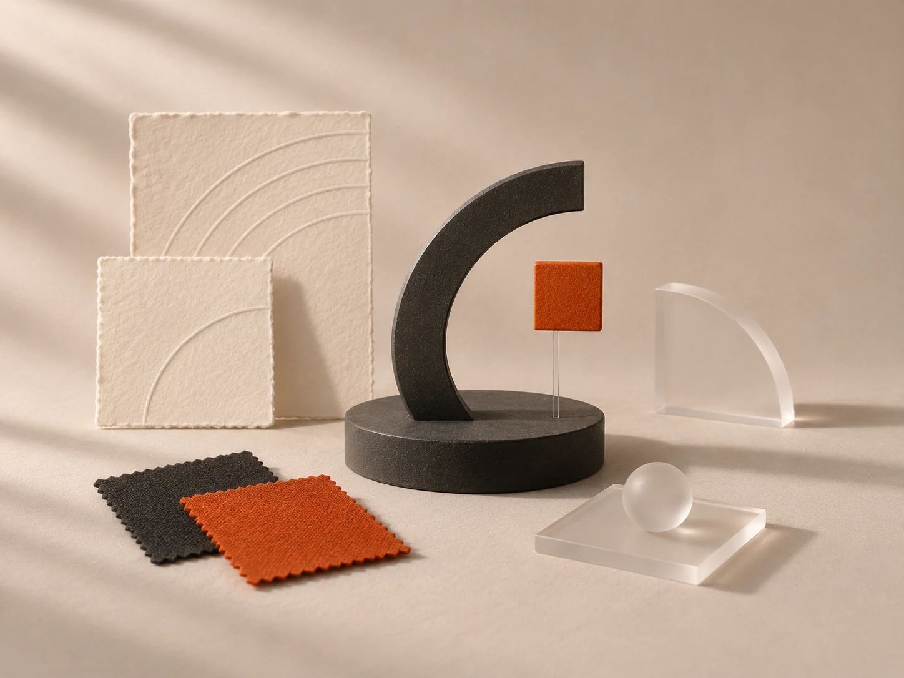
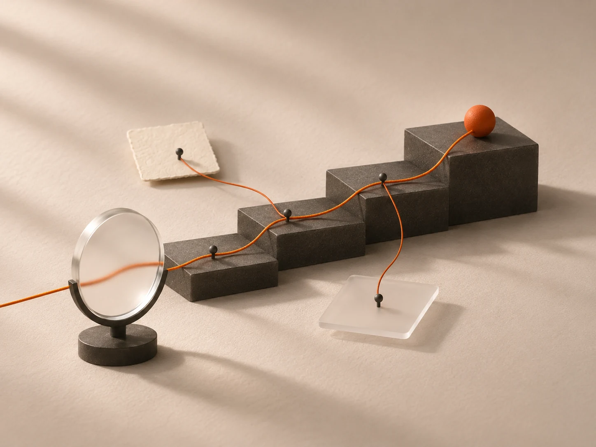
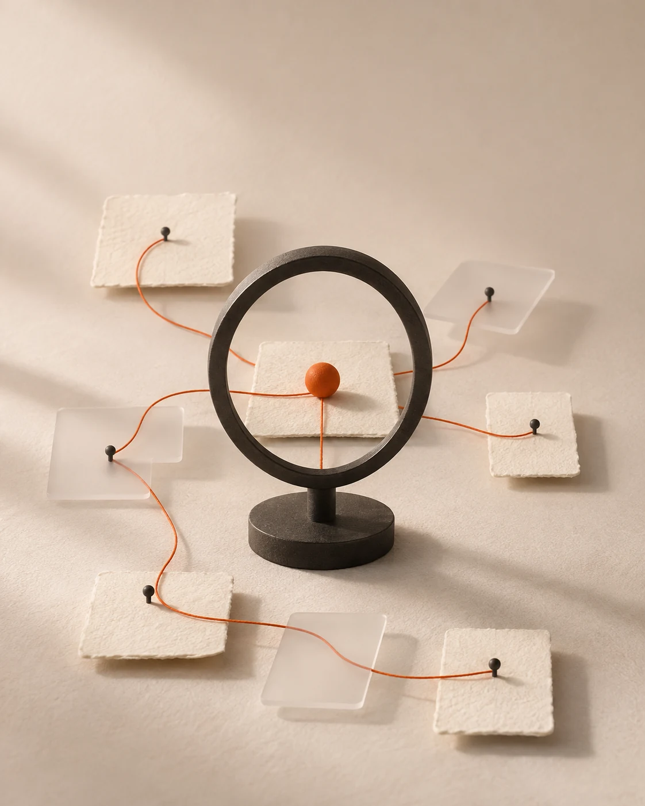
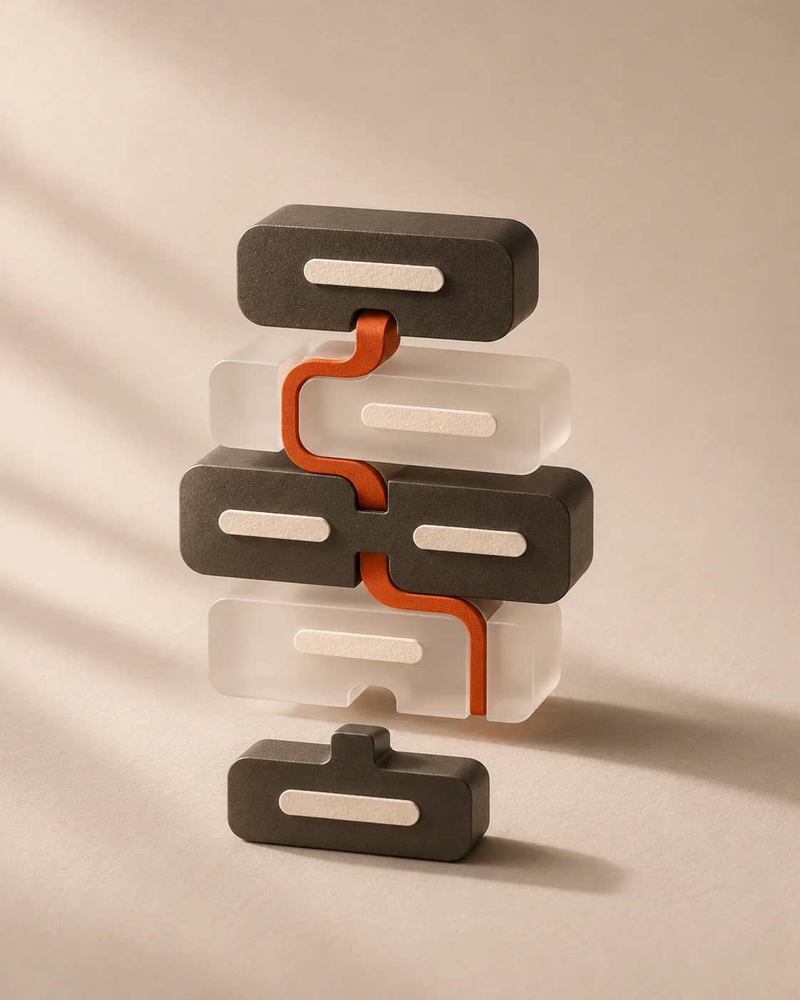
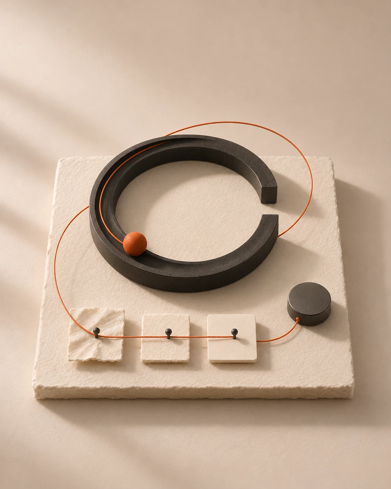

Product design, wireframes, and prototyping that turn ideas into clear, usable digital experiences.
- Product design
- User flows and wireframes
- Interactive prototyping
- UI/UX design
Yadunand Pavithran
00
Services
I help bring ideas to life through product and UI/UX design, web development, frontend engineering, branding, and SEO.

A–02Five services

Product design, wireframes, and prototyping that turn ideas into clear, usable digital experiences.

Full-stack and responsive websites built around your content, customers, and business goals.
React and interactive interfaces, with reusable components and attention to detail across screen sizes.

Brand identity and visual design that keep your website, product, and marketing materials consistent.

SEO optimization and digital growth through clear site structure, useful content, and better discovery.
A–03Stages
03 stages



01
I start with your goals, audience, and existing product or website. Together we define the scope, priorities, and what the finished project needs to achieve.
02
Wireframes and prototypes shape the experience before I build responsive interfaces and connect the features your project needs. You can review progress as the work develops.
03
I test the experience across screen sizes, prepare it for launch, and refine the details based on feedback. SEO foundations and a clear handover help you keep moving after launch.
A–04Questions
I offer product and UI/UX design, web development, frontend engineering, branding and visual identity, and growth and SEO. These can be combined or scoped around a specific need.
I can help improve an existing website, refresh an interface, or develop a new product. Share what you have and the areas you want to improve.
Yes. Product and UI/UX design, frontend engineering, and full-stack development can be brought together so the experience stays consistent from prototype to implementation.
Yes. Brand identity, visual design, and SEO can be scoped alongside your website or product so the work supports a consistent presence.
Send me an overview of your idea, your goals, and any existing content or references. I can then discuss the scope and the next steps with you.
The timeline depends on the scope, content, and features. We can agree on milestones once the requirements are clear.